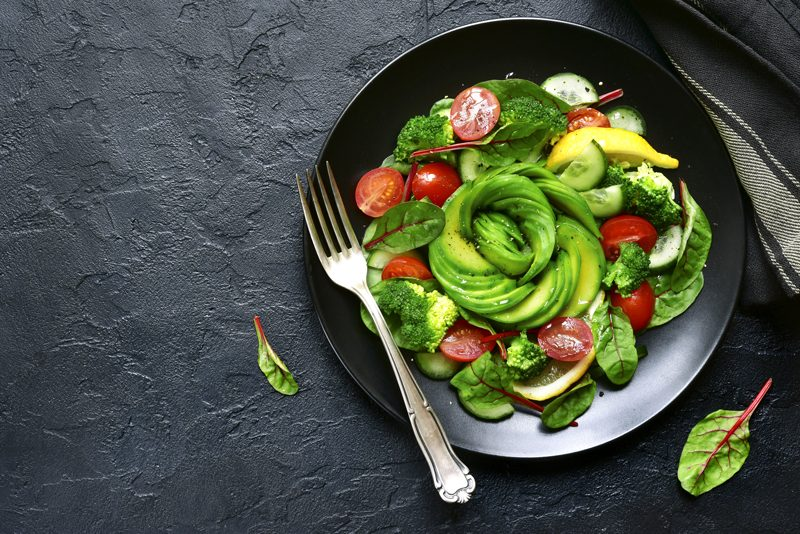
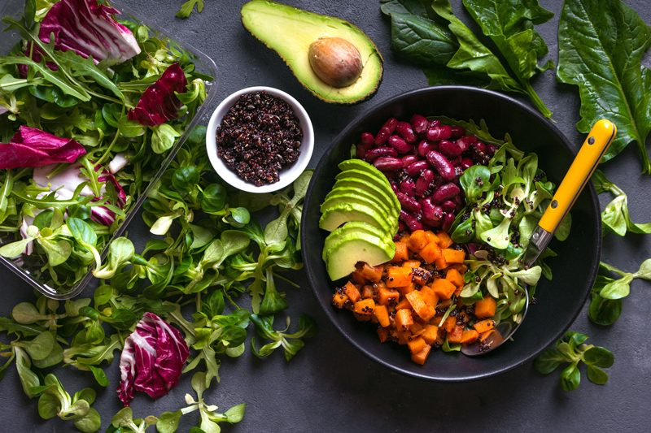
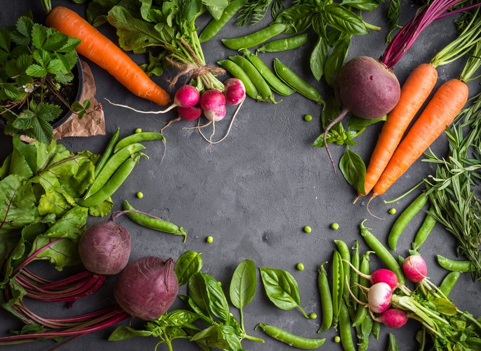
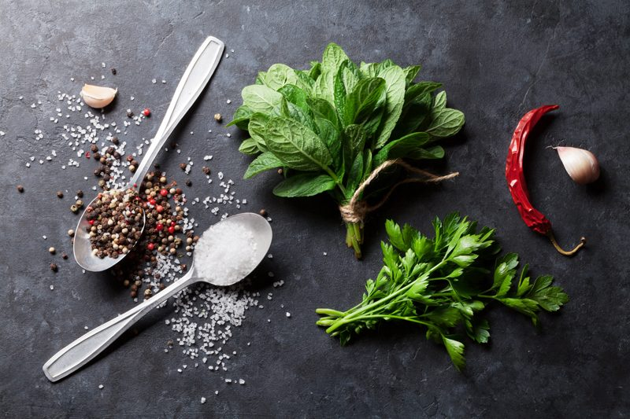
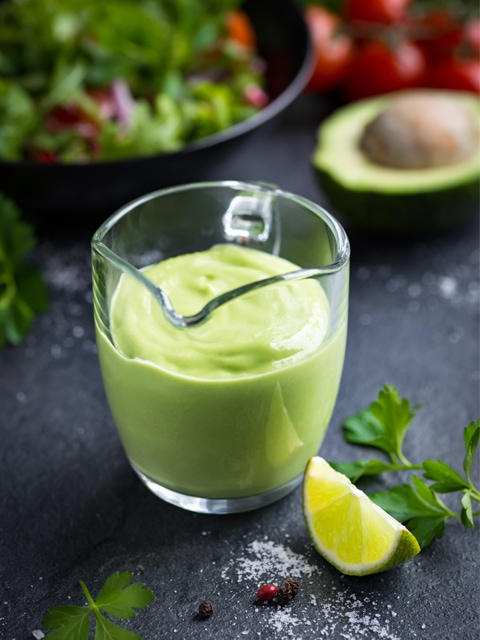
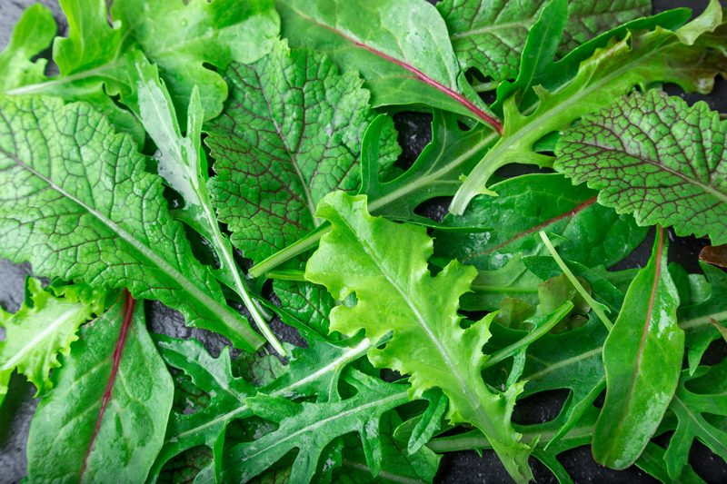

How to Build Your Best Salad
When most people think of sitting down to eat a salad, they’re usually not thrilled. If this how you feel when you think about salads, you’re not alone. But I am here to share with you that salads can be exciting, beautiful, filling, satisfying, nutritious, as well as a culinary pleasure! A well-constructed salad is one of life’s great pleasures.

Implement the following guidelines when creating a salad and you will be well on your way to a delicious meal that will leave you craving for more. Growing up, I thought a salad was made up of iceberg lettuce and a glob of dressing. Lettuce was just a vehicle in which dressing would find its way into my body.
Nowadays, thankfully, I find salads exciting and delicious. I load them up with a wide array of veggies giving me a vast assortment of color, flavor, texture, and nutrients. They can be a side dish or act as my main meal. I hope that by the time you are done reading through this post that you will not only be inspired but hungry!
Build According to the Season
One way to ensure the excitement of a salad is to create one according to the season. You will be getting the best tasting, healthiest food available. A pleasant side effect of eating what’s in season is that you get a broader variety of foods in your diet and that will keep boredom from settling in.
- Spring Time
- Recommended foods for the spring include onions, leeks, leaf mustard, leafy greens, yams, dates, cilantro, mushrooms, spinach, sprouts, and bamboo shoots.
- Summer Time
- Recommended foods for the summer include bitter gourd, watermelon, strawberries, tomatoes, mung beans, cucumber, wax gourd, lotus root, lotus seed, Job’s tears, and bean sprouts.
- In general, the daily diet should contain more vegetables and fruit at this time to stimulate the appetite and provide adequate fluids.
- Fall Time
- In the fall, enjoy foods such as mushrooms, nuts or seeds, pear, lotus root, pumpkin, honey, onion, ginger, peppers, pineapple, apple, grapefruit, and lemon.
- Fall is a great time to add in cooked grains or veggies.
- Winter Time
- Recommended foods during the winter months include apricot, asparagus, celery, grapefruit, kohlrabi, lettuce, radish leaves, kale, and vinegar-based dressings.
- The colder months are an excellent time to introduce cooked veggies as well as raw.
Don’t Fear Fats
Healthy fats are essential to give your body energy and to support cell growth. They help protect your organs and keep your body warm. They also help your body absorb some nutrients and produce important hormones. Eat the healthy ones, eat them in moderation, and do NOT let fear creep in while you are enjoying them.
- Healthy fats will help you feel fuller for a more extended period and help keep your blood sugar in check, so you don’t hit that mid-afternoon slump.
- While salad dressings may seem like they contain an outrageous measurement of fat when it comes down to how much everyone consumes per serving it’s quite a small amount.
- Fruit and vegetables are good sources of vitamins, minerals, antioxidants, phytochemicals, and fiber. Many of these nutrients (e.g., beta-carotene, vitamin D, and vitamin E) are fat soluble, and their absorption is enhanced when consumed with a small number of healthy fats.

Include Cooked Veggies and Grains
Warming foods have the effect of raising the energy of organs. They can help in improving circulation and dispelling cold. If you suffer from cold hands, feet, overall body, diarrhea, stomach pains or discomfort after eating or drinking cold things, bloating after eating, lack of energy, or sore joints this may be your body telling you to add in some warming foods (spices included).
- Winter vegetables will present new colors and textures to your salad.
- Adding in cooked components can truly elevate a salad. A bite of creamy baked sweet potato, a hint of sweetness from fresh corn kernels, or a dose of sweetness from roasted carrots can be just what your dish needs.
- A simple fix to an unsatisfying salad is to add grains. With the added carbohydrates and energy, low GI grains like brown rice, barley, and quinoa will transform your salad from zero to hero. It is also an excellent way to bring protein into the mix as well.

Add Texture
Everything you eat affects your body, even texture. It’s rare that a person likes to eat a complete meal that is of one texture. After a few bites, foods can quickly go from exciting to boring. It’s no different than creating a mixture of flavor; we love to enjoy an assortment of textures. By loading up a dish with an array of textures, you are also ensuring that you are upping the variance of nutrition.
- Salads don’t and shouldn’t be just one note when it comes to texture. By doing so, we quickly grow tired of our uneventful salads.
- Add nuts, seeds, sprouted/dehydrated buckwheat groats, and raw croutons for crunchiness.
- Add raisins, diced dried fruits, to add a little sweetness and a chewy texture.
- Diced onions, bell peppers, carrots, cauliflower, and baby peas are just a few ingredients that also add texture to a salad.
- Fresh seasonal fruit can be an excellent addition to your salad. Thanks to their natural sweetness and freshness, fruit lends itself perfectly to slightly bitter greens. Try grapes, berries, and mango in summer, or apple, pear, and orange in winter. Pomegranate arils are another fantastic addition.

Add Fresh Herbs
Adding fresh herbs to your salad will help maximize flavor and freshness.
- Fresh herbs are not only to be added to the dressing, toss them straight into the salad.
- Bright and flavorful herbs will blend beautifully with your greens of choice, all while amping up the flavor of the salad.
- Herbs add nutrients to a salad too. Let me touch base on just a few.
- Basil
- Sweet basil pairs naturally with tomatoes.
- Basil has a scent of pepper, anise, and mint. The taste is sweet but savory.
- Basil being a detoxifier and a mild diuretic helps to reduce the uric acid level in the body, which is the main culprit as far as kidney stones are concerned. (1)
- Parsley
- Parsley has a light peppery flavor. Keep in mind that curly parsley is best used only as a garnish.
- The vitamins, minerals, and antioxidants found in parsley help strengthen immunity. (1)
- Cilantro
- Cilantro, also called coriander, has a flavor that some people find “soapy,” but it’s still one of the world’s most popular spices.
- It has a bright, refreshing flavor, and it’s a staple of Latin and Asian cooking.
- The sweet stems and leaves are wonderful to add to a salad.
- The components of essential oils found in coriander such as borneol and linalool, aid in digestion, proper functioning of the liver, and bonding of bowels, while also helping reduce diarrhea. (1)
- Chives
- Chives add a flavor similar to onion without the bite.
- Their slender tube-like appearance looks excellent as a garnish either snipped and sprinkled or laid elegantly across a plate.
- The allyl sulfides and other unique, organic compounds found in chives deliver similar benefits to the body as garlic, and as such, can effectively ease digestive discomfort. (1)
- Mint
- Mint lends its cooling, peppery bite to plenty of savory dishes, and is perfect for summer-fresh salads.
- Mint leaves, especially freshly crushed ones, help you deal with nausea and headache. (1)

Dress it Up
- A terrific and healthy salad can suddenly become unhealthy if you put the wrong dressing a top it.
- Make dressings in a glass container; don’t use an aluminum bowl. The acid in a vinegar-based dressing can react with the aluminum, producing a metallic flavor.
- There are numerous ways to dress your salad.
- Pour the dressing over the top of the salad and then toss it all together really well.
- Place dressing in a small cup on the side, dip the fork into the dressing then into the salad.
- Use a spritz bottle for thinner dressings.
- Sippy cups are a great way to control the amount of dressing you drizzle over the salad.
- Hummus or guacamole make for a wonderful dressing.
- Don’t dress a salad until you are ready to serve.
- Want to learn how to dress these lovely greens? Click here and learn how to make salad dressings.
Most Importantly
It is also important to remember that our bodies are designed to enjoy the food we eat. Our tongues are designed to recognize and savor the different tastes. Even our sense of smell alone stimulates the production of salvia. As we enhance our awareness and enjoyment of food, we assist our body with healthy digestion.
- Sit down when you eat.
- Chew your food well; digestion starts in the mouth.
- Pay attention to your food, turn off the television, tuck away the phones, get away from distractions. Eating is a time to honor your body.
- Eat organically and locally.
- Eat seasonally.
- Do not skip meals.

Pick your Greens
Salad greens are year-round sources of vitamin A, vitamin C, and other nutrients. Red and dark green leafy vegetables are generally higher in nutrients than light-colored greens. Take a minute to massage raw kale or mustard greens with oil and a pinch of salt before adding the other ingredients; it’s worth it!
Arugula [uh-REW-guh-la]
- It has a peppery and slightly bitter flavor; arugula is a terrific green to throw into an otherwise boring salad.
- Leaves are: Dark green and tender.
- Taste is: Bitter and peppery, with a slight mustard taste.
- Use arugula alone to stand up to tangy dressings (e.g., lemon vinaigrette) and bold flavors, or mixed with other lettuces as an accent note.
- Substitutes: Watercress or any of the following – tender spinach leaves plus a dash of ground pepper, Belgian endive, escarole, young dandelion greens (more bitter), young mustard greens, chicory, radicchio.
Belgian endive = French endive = witloof = witloof chicory = chicory (in Britain) = Belgium chicory = blanching chicory = Dutch chicory = green-leaved blanching chicory
- These crunchy, slightly bitter leaves are often used to make hors-d’oeuvres, but they can also be chopped and added to salads.
- Choose heads with yellow tips. The ones with green tips have a more bitter flavor. Their peak season is the late fall and winter.
- Substitutes: Radicchio (similar flavor), arugula, watercress.
Bibb lettuce = limestone lettuce
- This butterhead lettuce has delicate, loose leaves and lots of flavors. The only downside is that it’s usually expensive.
- Look for fresh, green leaves with no sign of wilting or blemishes.
- Substitutes: Boston lettuce (larger), leaf lettuce, celery leaves.
Bok Choy
- Bok choy is similar to celery and Swiss chard.
- Its white stems are mild, juicy and crunchy. Its veined leaves are dark green and milder tasting than those of cabbage.
- There are many varieties of Bok choy, some with long stems and some with short stems.
- Look for Bok Choy Chinese Cabbage with compact, firm and fresh stems, with no brown spots.
- Bok choy can replace Swiss chard or spinach in any recipe.
Boston lettuce
- Boston lettuce is a type of butterhead lettuce, with soft, tender leaves.
- It’s terrific in salads and sandwiches, or the leaves can be used as a bed for other dishes.
- Leaves are: Loosely formed heads of pale “wrinkled” leaves, smooth buttery texture.
- Taste is: Sweet and mild.
- Substitutes: Bibb lettuce (smaller, more flavorful, and more expensive), leaf lettuce, iceberg lettuce, celery leaves.
Chard
- Also known as Swiss Chard.
- Leaves are: Large, deep green, “wrinkled” leaves are always eaten cooked.
- Taste is: Similar to beets, while the stalks are somewhat like celery.
Dandelions = dandelion greens
- Dandelions have a somewhat bitter flavor.
- Leaves are tender, flat, with jagged edges.
- Choose fresh young leaves still attached to the roots.
- Older dandelion greens should be cooked; younger ones can be cooked or served raw as a salad green.
- They’re available year-round, but they’re best in the spring.
- To serve in salads, use sweet vinaigrette with walnut oil or raspberry vinegar.
- Substitutes: Watercress (not as bitter), curly endive, escarole, arugula.
Endive
- Leaves are: Tender and smooth.
- Taste is: Mild and bitter. The lighter the endive, the milder the flavor is.
- They have a spoon-like shape making them perfect for using as a serving vessel.
Escarole = Batavian endive = Batavia = scarole
- Escarole has sturdy leaves and a slightly bitter flavor. Young escarole leaves are tender enough to add to salads. Otherwise, escarole is best cooked as a side dish or used in soups.
- Substitutes: Curly endive (stronger flavor, different flavor), radicchio, borage, mustard greens, arugula, spinach.
Frisée
- Leaves are: Wide and frilly.
- Taste is: Mild, good to add for “fluff” and texture.
Green-leaf lettuce
- Substitutes: Red-leaf lettuce (different color, but otherwise similar), bibb lettuce.
Iceberg lettuce = head lettuce = cabbage lettuce = crisphead lettuce
- Prized for its crispness and longevity in the refrigerator, but it’s a bit short on flavor and nutrients.
- Substitutes: Romaine lettuce (also crunchy, and more flavorful), leaf lettuce.
Lollo rosso
- This mild, tender lettuce has ruffled red edges.
- Substitutes: Red-leaf lettuce.
Mizuna = Japanese greens = spider mustard
- Mizuna has tender leaves and a pleasant, peppery flavor.
- Substitutes: Young mustard greens (more pungent), arugula.
Red-leaf lettuce
- Substitutes: Green-leaf lettuce (different color, but otherwise similar), radicchio (for color).
Romaine lettuce
- Romaine combines good flavor and crunch, plus it has a decent shelf life in the refrigerator. It’s the preferred green for Caesar salad.
- Green romaine is the most common variety, but you can sometimes find red romaine, which is more tender.
- Its crunchy texture can stand up to any dressing.
- Leaves are long green leaves, with a crunchy center vein.
- Taste is: Bitter and succulent.
- Substitutes: Boston lettuce.
Spinach
- Leaves are: Tender, dark green, and sometimes wrinkled, sometimes smooth.
- Taste is: Slightly bitter and somewhat hearty.
Spring salad mix = mesclun = field greens
- A mix of different young salad greens.
- Commercial mixes usually include arugula, mizuna, tatsoi, frisée, oakleaf, red chard, radicchio, mustard greens, and radicchio.
Watercress
- Leaves are: Small and dark-green on long stems.
- Use watercress as soon as possible, removing any yellowed or wilted leaves. Tender stalks and roots are perfectly edible along with the dark green leaves.
- Taste is: Strong and peppery.
- Cress is very fragile and will not keep more than a day or two in the fridge.
© AmieSue.com